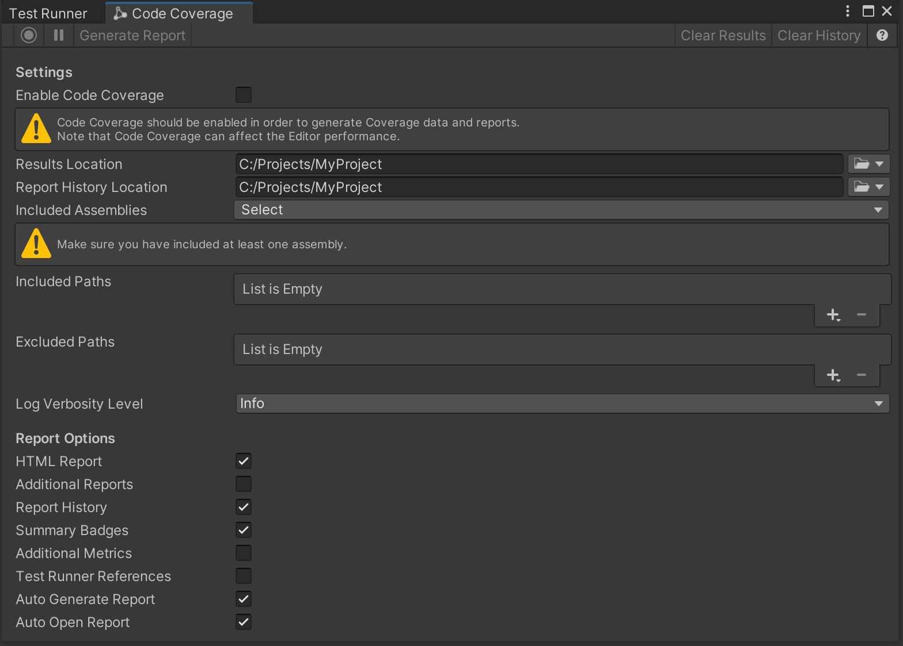
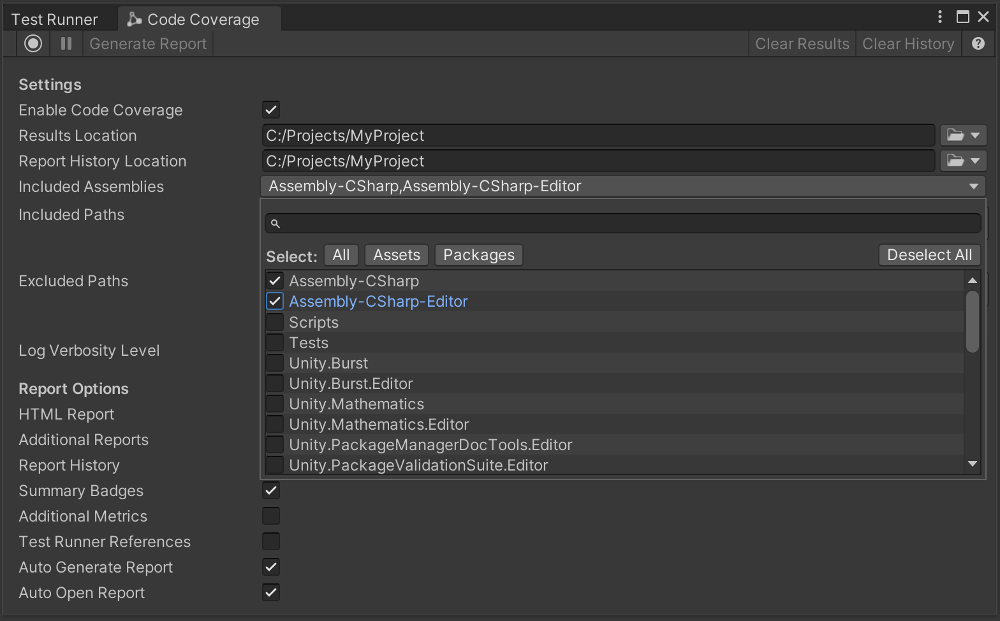
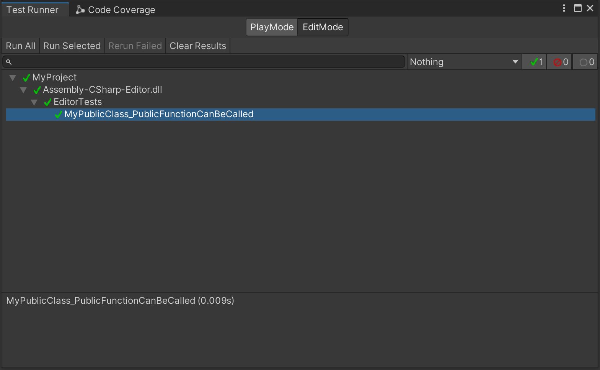
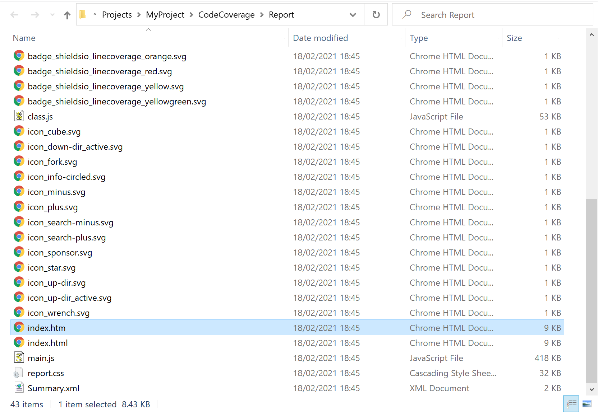
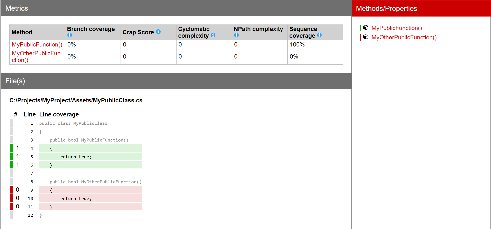

Using Code Coverage with Test Runner¶
When running your tests in the Test Runner you can generate an HTML report which shows which lines of your code the tests cover. This includes both EditMode and PlayMode tests.
If Auto Generate Report is checked, then an HTML report is generated and a file viewer window opens (if Auto Open Report is checked too). It contains the coverage results and the report. Otherwise, select Generate Report to generate the report. The results are based on the assemblies specified in Included Assemblies.
Steps¶
Open the Code Coverage window (go to Window > Analysis > Code Coverage).
Select Enable Code Coverage if not already selected, to be able to generate Coverage data and reports.

Note: Enabling Code Coverage adds some overhead to the Editor and can affect the performance.Select the Assembly Definitions you would like to see the coverage for. In this example we selected
Assembly-CSharpandAssembly-CSharp-Editor. By default, Unity compiles almost all project scripts into theAssembly-CSharp.dllmanaged assembly and all Editor scripts into theAssembly-CSharp-Editor.dllmanaged assembly.
Switch to the Test Runner and run your
EditModeand/orPlayModetest(s).

Example test:
using NUnit.Framework;
using Assert = UnityEngine.Assertions.Assert;
public class EditorTests
{
[Test]
public void MyPublicClass_PublicFunctionCanBeCalled()
{
MyPublicClass myPublicClass = new MyPublicClass();
Assert.IsTrue(myPublicClass.MyPublicFunction());
}
}
When the test(s) finish running, a file viewer window opens containing the coverage report. Alternatively, select the Results Location dropdown to open it in the file viewer.
Note: To generate the report automatically after the Test Runner has finished running the tests, select Auto Generate Report in the Code Coverage window. Alternatively, you can select Generate Report.Select
index.htm.

This opens the HTML coverage report.

Get results for EditMode and PlayMode tests¶
Coverage data are generated from the last set of tests that were run in the Test Runner.
Note: Currently the Test Runner does not support EditMode and PlayMode tests running at the same time. In version 2.0 of the Test Framework this will be possible. In the meantime, to include coverage for both EditMode and PlayMode tests, you must run these separately. In this case, the last Coverage Report generated will include the combined coverage of EditMode and PlayMode tests.
If a fresh start is required, select Clear Results to clear the Coverage data from all previous test runs for both EditMode and PlayMode tests.
Get coverage by test methods¶
To see how each test contributes to the overall coverage check Test Runner References. For more details see Coverage by test methods.